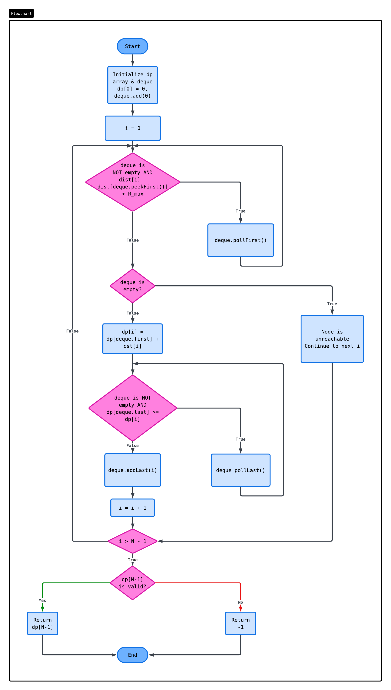
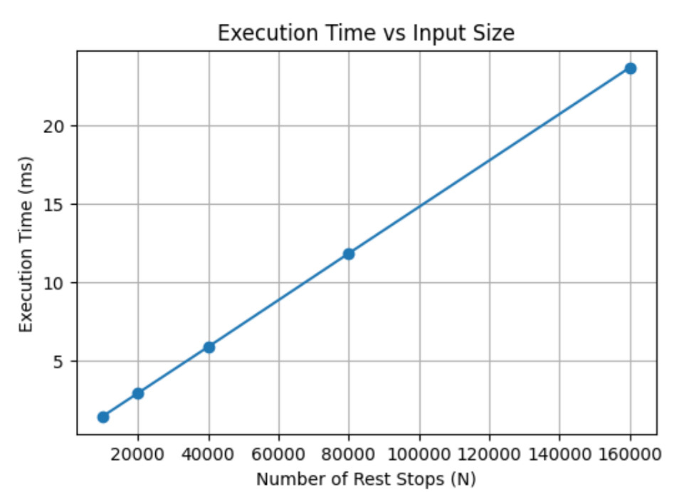

Optimizing EV Charging Networks
A $\Theta(N)$ Dynamic Programming solution to solve the highway range anxiety problem while minimizing installation costs.
Explore the Project1. The Problem
The Scenario
The highway department is planning a massive green infrastructure project. They need to install high-speed EV charging hubs at existing rest stops along a linear highway.
The Challenge
Range anxiety is a major barrier to EV adoption. If the gap between stations exceeds standard EV range ($R_{max}$), drivers will be stranded. However, installing charging hubs is extremely expensive. Using a naive approach wastes millions in budget.
The Objective
Find the absolute minimum total cost required to build a valid charging network, ensuring no driver ever runs out of battery. If the distance between two necessary rest stops exceeds the EV range, it's impossible, and the program must gracefully return an error.
The Problem
The highway department needs to select a subset of existing rest stops along a linear highway of length L to install high-speed EV charging hubs. The goal is to minimize the total installation cost while ensuring that no two adjacent charging stations are further apart than the maximum driving range of a standard EV.
You are given a 1-dimensional, linear highway of total length L kilometers. Along this highway, there are n existing rest stops. You are given three inputs:
distances: An integer array of lengthn, wheredistances[i]represents the exact kilometer marker of thei-th rest stop from the starting point of the highway. (The array is guaranteed to be strictly increasing:distances[0] < distances[1] < ... < distances[n-1]).costs: An integer array of lengthn, wherecosts[i]represents the financial cost (in RM) to construct a high-speed charging hub at thei-th rest stop.R_max: An integer representing the maximum driving range (in kilometers) of a standard electric vehicle on a full charge.
A vehicle starts at kilometer 0 with a full battery. To ensure a vehicle never runs out of power, the distance from the starting point to the first chosen hub, the distance between any two consecutively chosen hubs, and the distance from the last chosen hub to the end of the highway (L km) must not exceed R_max. You can choose any subset of the n rest stops to build a hub, provided the range feasibility rule is maintained globally across the corridor.
Return the minimum total cost required to build a valid charging network along the highway. If it is physically impossible to bridge the highway under the given R_max constraint, return -1.
2. The Algorithm
To solve problem, a key observation is the minimum cost to reach the i-th stop is logically the minimum of the minimum total cost to reach the j-th stop (j < i) plus costs[i]. A greedy approach would fail here because choosing the cheapest available stop now might force us into an exorbitantly expensive stop later. Instead, we use Dynamic Programming (DP).
Recurrence Relation
$dp[i] = costs[i] + \displaystyle{\min_{\substack{0\le j< i \\ distances[i]-distances[j]\le R_{max}}}(dp[j])}$
Optimization
The basic DP approach involves iterating backwards from the current stop i to find the minimum dp[j] among all valid previous stops j within the range R_max. This nested loop results in a time complexity of $O(N^2)$.
To optimize this to $O(N)$, we utilize a Monotonic Deque (sliding window minimum). The deque maintains a strictly increasing order of dp costs for all reachable nodes. Instead of scanning all previous nodes, the optimal cost dp[j] is always immediately available at the front of the deque (deque.peekFirst()). Nodes that fall out of the R_max range are popped from the front, and nodes with higher costs are popped from the back when a cheaper node is inserted, ensuring amortized $O(1)$ state transitions.
Optimized Pseudocode
Algorithm: MinimumCostEVNetwork(L, distances, costs, R_max)
Input:
L: Integer, total length of the highway
distances: Array of rest stop distance markers (length n)
costs: Array of costs to build a hub at each rest stop (length n)
R_max: Integer, maximum EV driving range
Output:
Minimum total cost to reach the end of the highway, or -1 if impossible
// Pre-processing to add Start (0) and End (L) nodes
N ← length(distances) + 2
dist ← new Array(N)
cst ← new Array(N)
dist[0] ← 0
cst[0] ← 0
For i = 0 to length(distances) - 1:
dist[i+1] ← distances[i]
cst[i+1] ← costs[i]
dist[N-1] ← L
cst[N-1] ← 0
// DP Initialization
dp ← new Array(N) initialized to Infinity
dp[0] ← 0
// Initialize double-ended queue to store indices of potential previous stops
deque ← new DoubleEndedQueue()
deque.addLast(0)
For i = 1 to N - 1:
// Step 1: Remove indices from the front that are out of EV range
While deque is not empty AND (dist[i] - dist[deque.peekFirst()]) > R_max:
deque.pollFirst()
// Step 2: Check if current node is reachable
If deque is empty:
continue // Unreachable from any previous valid node
// Step 3: Calculate optimal cost (front of deque always has minimum valid cost)
bestParent ← deque.peekFirst()
dp[i] ← dp[bestParent] + cst[i]
// Step 4: Maintain monotonic property of the deque
// Remove indices from the back if they have a higher or equal cost than the current node
While deque is not empty AND dp[deque.peekLast()] >= dp[i]:
deque.pollLast()
// Add current node index to the back of the deque
deque.addLast(i)
// Return output
If dp[N-1] >= Infinity:
return -1
Else:
return dp[N-1]Flowchart

3. Demonstration & Output
Test Case 1: An optimal solution is achievable.
Input$L = 1000$
$distances = [200, 400, 600, 800]$
$costs = [50, 100, 50, 100]$
$R_{max} = 400$
OutputInteractive Program Trace
Test Case 2: A solution is impossible.
Input$L = 1000$
$distances = [200, 300, 800, 900]$
$costs = [50, 50, 50, 50]$
$R_{max} = 400$
OutputInteractive Program Trace
4. Algorithm Analysis
Time Complexity: $\Theta(N)$
By substituting a linear search for previous nodes with a Monotonic Deque, the optimization reduces the state transition time from $O(N)$ per iteration to an amortized $O(1)$.
Because there are exactly $N$ insertions across the entire algorithm, there can be at most $N$ deletions. The total time spent across all inner while loops is strictly bounded by $O(N)$, resulting in an optimal $\Theta(N)$ universally across best, average, and worst-case scenarios.
Empirical Proof
As seen in the graph below, the execution time scales perfectly linearly with the input size (number of rest stops), confirming our $\Theta(N)$ theoretical analysis.

Space Complexity: $\Theta(N)$
The solution requires $O(N)$ space to store the 1D dp array, distance arrays, and the path reconstruction array. The Deque data structure stores at most $N$ elements at any given time, requiring an additional $O(N)$ space.